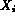

Once the governing equations have been cast the next task involves developing models for the constitutive relations that predict the rate of mass, momentum and energy transfer from one phase to another or from the phases to the surrounding channel. This task is the major endeavor for multiphase flow analysis. If one is concerned with predicting the pressure drop in a channel with multiphase flow then one must develop a model for wall shear stress,  , and also a relation for the relative velocity, between the phases if a separated flow or two-fluid model is used. In engineering practice the current method for modelling multiphase pressure drop falls into two categories: (1) Homogeneous models where a relation for
, and also a relation for the relative velocity, between the phases if a separated flow or two-fluid model is used. In engineering practice the current method for modelling multiphase pressure drop falls into two categories: (1) Homogeneous models where a relation for  and is developed empirically, or (2) Two-fluid or drift flux models where one uses the separated flow model for
and is developed empirically, or (2) Two-fluid or drift flux models where one uses the separated flow model for  and substitutes the empirical relation for by the complete solution of each phase momentum equation.
and substitutes the empirical relation for by the complete solution of each phase momentum equation.
Consider the steady-state form of the momentum equation for the HEM model from Table 3.2 (Equ 3)
where in this equation we have assumed the channel flow area is constant and we have substituted the constant mass velocity, G, from the mass balance into the acceleration pressure drop term. Note that this equation is not valid for the case of multiphase flow of a liquid and solid where the solid adheres to the wall. Now the model used for  is based on the assumption that we have liquid flowing alone, fo, in the channel and correct for this by using a two-phase multiplier, , (this technique can be extended to more than two phases in a straight forward manner),
is based on the assumption that we have liquid flowing alone, fo, in the channel and correct for this by using a two-phase multiplier, , (this technique can be extended to more than two phases in a straight forward manner),
where the channel can be represented by the hydraulic diameter,  . By inspection one sees that the two-phase multiplier, , is equal to
. By inspection one sees that the two-phase multiplier, , is equal to
where the first phase is a liquid, f, and the second phase is a gas, g. Now consider that the two-phase friction factor, has the same empirical function form as single phase, and this yields
where one now must use an averaging scheme for the transport property viscosity (e.g., see Eq. 9 for ). The value of the exponent, m, would depend whether one was in a laminar or turbulent flow regime. When these constitutive models are substituted into the original momentum balance the total pressure gradient results (Table 3.5). One should remember that the mass fraction is a thermodynamic property and therefore is a function of two other independent properties, here we have chosen the mixture enthalpy, i, and pressure P, because they are the 'natural' variables calculated for a steady flow. This dependence of  on i and P results in partial derivatives with respect to enthalpy and pressure in the acceleration pressure drop term. The enthalpy dependence is found from the energy balance while the pressure effect is directly found by the momentum equation by back substitution.
The final observation that one should make concerns the term in the denominator of the total pressure gradient. If one evaluates the quantity in brackets (say for steam-water flow) the result indicates that the value lies between zero and one. Consider the case when the term approaches zero. In this case the change in specific volume (density) as a function of pressure is negligible. This suggests that one can treat the multiphase system as an incompressible fluid. Now as the term in brackets approaches unity the denominator approaches zero and the pressure gradient approaches infinity. Physically when the pressure gradient approaches infinity it implies the existence of shock wave or acoustic wave (weak shock). In the present example the only way this is created is because the variation of the density with pressure is large, this implies the flow , is traveling fast enough that it has equaled the speed of pressure perturbations in the fluid mixture, i.e., the 'sound speed' of that homogeneous mixture . Thus, the HEM model Mach number is approximately given by the term in brackets and has the same physical significance as in single phase flow (see Table 3.1). This is detailed in the following section.
For the separated flow model, the original definition for the two-phase friction multiplier is used except now one replaces the analytical model for by an empirical correlation based on data. Probably the most widely used model is that by Martinelli and Nelson (Figure 3.2 and Figure 3.3) in which pressure gradients for air-water flows at low pressure and steam-water flows at high pressure were correlated as a function of flow regime (e.g., turbulent flow) as well as properties. The resulting correlation for the two-phase friction multiplier, , is given in Figure 3.2 as a function of the dimensionless Martinelli parameter, , where
Also the void fraction of the gas phase was correlated as a function of the Martinelli parameter (Figure 3.3). In this case one would use this empirical result along with the basic constitutive relation for , and (Table 3.3, Eq. 10) to find the velocity ratio.
Finally, in a similar manner one would determine the dimensionless Mach member for the separated flow model. Table 3.6 presents the complete pressure gradient term for the separated flow model. Since the void fraction is a function of the velocity difference as well as the quality, both void and quality appear as function of the enthalpy and pressure at any location in the channel. The quality variation is found by the energy balance and the void fraction must be obtained by a separate model or empirical data (such as Martinelli's data). We consider a phenomenological void model in the next section, that can be used in separate flow models; i.e., drift flux model. As for the two-phase friction multiplier, a number of investigators have developed a data-base and associated correlations (e.g., Thom, 1984, Barozcy, 1966, Chisholm, 1973, and Friedel, 1979). Based on a comparison to a proprietary data bank of HTFS, it was found that :
A recommendation of which model is most suitable depends upon the application. The important consideration that one must remember is the relative density ratios (Atwood ratio) and the influence of the gravitational potential field (Froude number) on causing a drift or allowing a relative velocity to exist between the phases. If these differences are large then one should separate the flow model. For example, for air-water flows at ambient pressure the density ratio is large ( , Atwood Ratio 1) therefore a separated flow model may be dictated. As the density ratio approaches one then a homogeneous model becomes more appropriate for a wide range of applications.